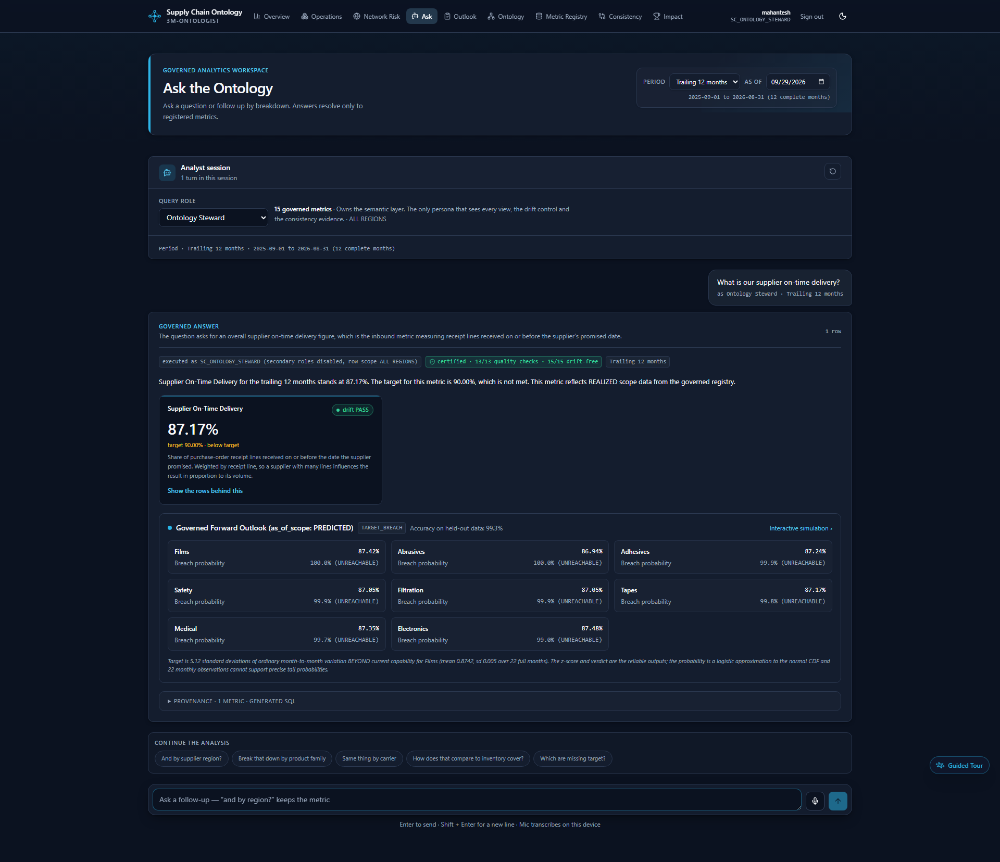
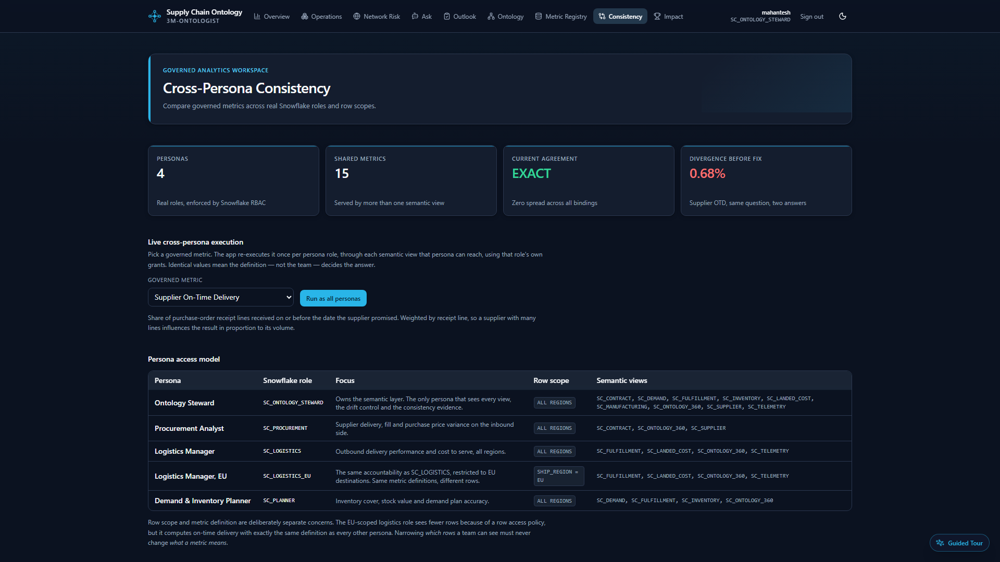
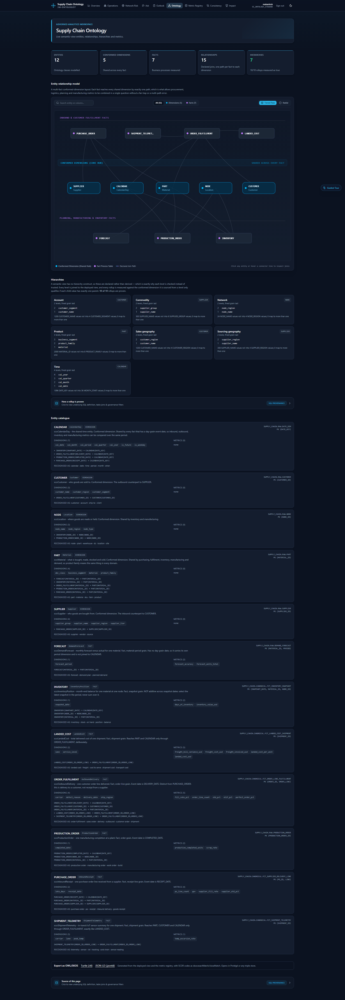
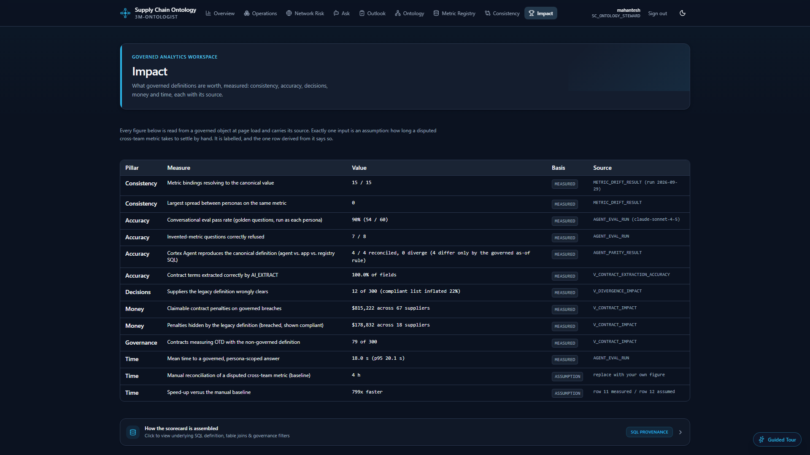
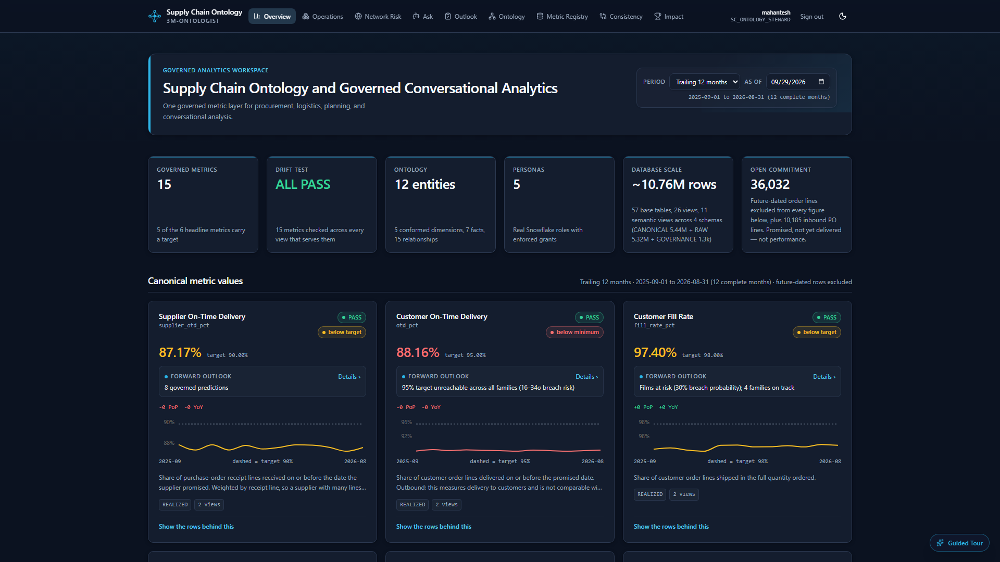
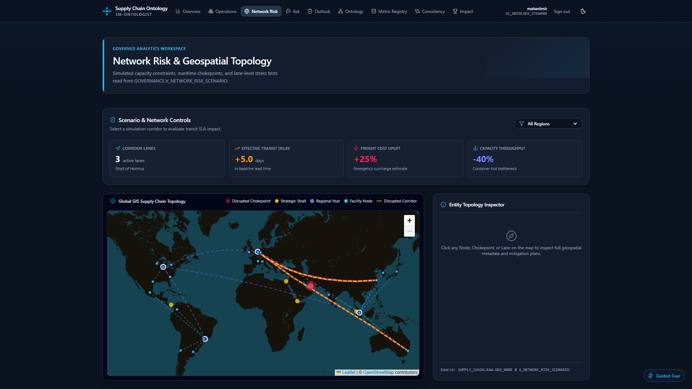

One definition.
Every team.
The same answer.
Governed conversational analytics on Snowflake semantic views, with a test that proves the answers stay identical.
- Team name
- 3M-ONTOLOGIST
- Team leaders
- Mahantesh · Devansh · Sathyam
- Team size
- 3
- Problem statement
- Teams compute the “same” supply chain metric differently, get different numbers, and cannot prove which is right. The wrong one quietly clears non-compliant suppliers.
Two numbers.
Same 420,000
receipt lines.
“Same question, two answers. The hour gets spent on whose number is right, not on what to do.”
A wrong pass makes no noise.
- Business problem
- One metric, a different number in every team’s tool. The disagreement is found in a review meeting, not in a test.
- Target users
- PlanningProcurementLogisticsLogistics · EUOntology steward
- Pain → fix
Hours arguing over whose number is right.Metrics defined once as semantic views and proven identical for every persona, every day.- Industry
- Manufacturing supply chain. ERP, WMS, TMS, IoT and supplier contracts, each with its own idea of “on-time”.
It tests its own agreement, every day.
And keeps a deliberately broken metric deployed, so you can watch the test catch it.
| Typical BI dashboard | Typical text-to-SQL chat | Supply Chain Ontology | |
|---|---|---|---|
| Where a metric is defined | In each report | In each prompt | Once, in a governed registry |
| Same number for every team | Hoped for | Not guaranteed | Proven daily, zero spread |
| Access control | App layer | App layer | Snowflake role and row policy |
| Numbers in the answer | Not applicable | Can be invented | Invented figures discarded |
| Contracts and free text | Left out | Left out | Read by AI_EXTRACT, 2,700 of 2,700 fields |
| Cost of disagreement | Unknown | Unknown | 12 suppliers · $178,832 hidden |
Plain English in. A governed number out.
- The model never writes SQL. It picks registered metrics; anything unregistered cannot be asked.
- Follow-ups work. “And by supplier region?” is understood, and every turn is re-checked against the persona’s grants.
- Invented figures are discarded. Prose with a number the rows lack is replaced by a template.
- Speak it. Whisper runs in the browser. Audio never leaves the device.
was 16–20 s
60-question eval


One metric. Four real roles. The same number.
- Executed as each Snowflake role, with secondary roles off, so the database enforces access.
- Checked against atomic SQL. Two views cannot agree while both being wrong. Runs daily at 06:00 UTC.
- A broken control stays live. 0.882631 against the correct 0.875824 proves the test can fail.
zero spread
same answer
The diagram cannot drift from what is queried.
- Read live from INFORMATION_SCHEMA. Entities and relationships come from the deployed view.
- Hierarchies are measured. Every rollup is tested as a true functional dependency. Two plausible ones were rejected.
- Portable. OWL/SKOS export as Turtle or JSON‑LD, with SCOR codes as exactMatch and closeMatch.
proven


Every claim carries its source.
- MEASURED or ASSUMPTION, labelled on every row, with the object it came from.
- Contracts become money. AI_EXTRACT reads 300 free-text contracts and holds them against the governed metric.
- Definition conflicts surface. 79 contracts encode the non-governed definition of on-time.
penalties
legacy metric
Built for operations, not just reports.
Plus governed forecasts shown only with their backtested accuracy, a guided tour, light and dark themes, and a shareable period with an as-of date.


Everything queries one surface: the ontology.
Sources
Model
Semantic
Governance
Serve
Fourteen layers, one skill each.
| Layer | SQL module | CoCo skill |
|---|---|---|
| Sources and facts | 00a–00d, 11 | sql-author |
| Semantic views, agent | 00e, 07, 10 | agent-studio |
| Roles, row policy, grants | 00a, 00f | data-governance |
| Drift test, schedule, alert | 00f, 04, 06 | data-quality · snowflake-tasks · alert |
| Forecast, breach prediction | 07b, 08 | machine-learning |
| Contract extraction | 16 | document-intelligence · cortex-ai-function-studio |
| SCOR industry alignment | 18 | sql-author |
| Certification, DQ, trust badge | 19 | certify-object · data-quality |
| MCP server for other agents | 20 | sql-author |
| Refusals → ontology roadmap | 21 | cortex-ai-function-studio |
| CI governance gate | 22, workflow | ci-cd |
| Weekly breach digest | 23 | snowflake-tasks · notification |
| Impact of changing a view | — | lineage |
| App, voice, OWL export | app/, app.yml | snowflake-apps |
A contract amendment lands. The answer changes in nine seconds.
Free-text amendment
Supplier SUP-00042 raises its on-time commitment from 85% to 87%.
$document-intelligenceExtract, index, re-score
INGEST_SUPPLIER_CONTRACT runs AI_EXTRACT, refreshes search and re-scores compliance against the governed metric. About 9 s.
Nothing drifted
5 of 5 metrics identical across personas, 22 scoped executions. Every binding PASS, zero spread.
$data-quality“Breached but look compliant?”
$196,156 in penalties. Was 18 before the amendment: the new contract is already in the answer.
$agent-studioin contract penalties the legacy metric hides, across 18 suppliers.
79 of 300 contracts write the flaw into the agreement.
They define on-time as a monthly average. The enforceable number and the governed number differ by construction.
A dashboard cannot renegotiate a contract. The ontology can flag every one.
A new metric is one row.
A new source is one canonical fact. IoT and contracts were both added that way, without touching the base semantic layer.
Beyond the demo: the same pattern applies anywhere two teams compute “the same” metric.
No-code pickup
Drift test, registry page, consistency runner and /ask all see a new metric. No code change.
New document types
Quality certificates, rate confirmations, customs declarations. Extract, score, route low certainty to review.
The roadmap writes itself
Refused questions are classified; unregistered-metric demand is ranked. Forecast totals and schedule adherence lead.
Every agent, same number
MCP exposes governed metrics, executing as the caller. EU logistics 0.8959, global 0.8855.
Portable ontology
OWL/SKOS export as Turtle or JSON‑LD. SCOR codes as exactMatch and closeMatch.
Governance in the build
A PR that drifts a binding or certifies the defect view fails CI. Proven red and green.
Proven on all three judging focuses.
Models the chain in the brief and prices the divergence in decisions.
Definitions are proven, not asserted, and a broken control stays deployed.
Structured and unstructured data, scored chat, MCP, a CI gate, OWL export.
One definition. Every team. The same answer, and a test that proves it tomorrow.